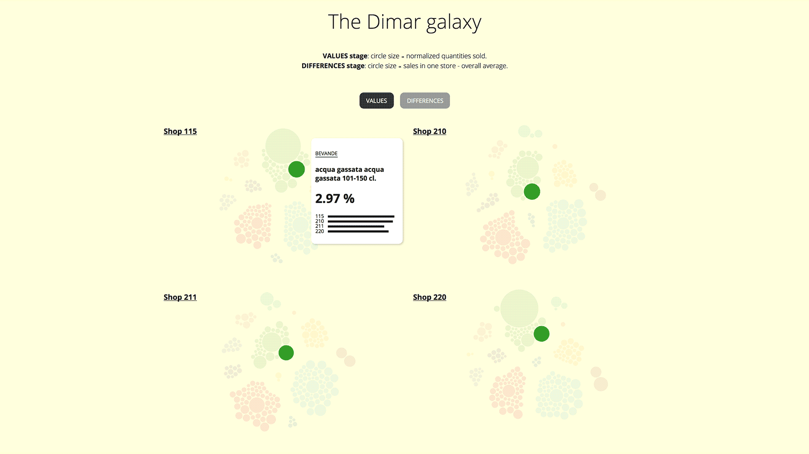
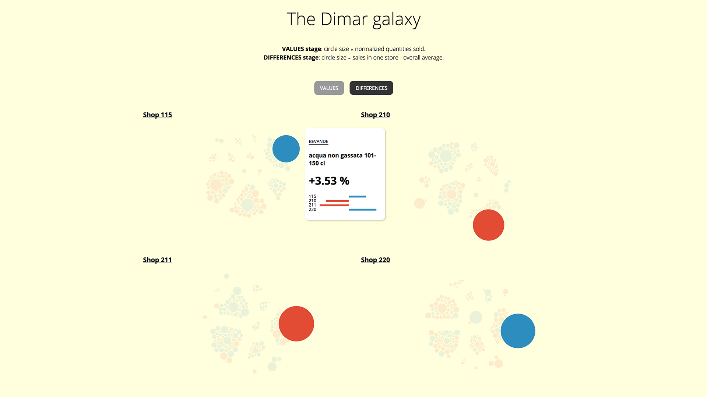

Client
Dimar
Year
2015
Team
Myself, Chiara Barbagianni, Simone Basso, Adam Klimont
Tasks
Visual design, Data visualization, Front-end development
The Dimar galaxy
Interactive web tool aimed to analyse the stock diversity among different types of supermarkets. The project was carried out during the Big Dive course, and I took care of the visualization design and development.
Link to live applicationGoals
The customer wanted to explore what different types of supermarkets sold most or least. The project goals were:
1. Identify the specificities in the sales of different types of supermarkets.
2. Setting up a starting point to discuss how to diversify supplies in each shop type in order to optimize logistics.
Solution
A visual tool representing the sold quantities of each product family, and the difference between the sales in one store and the overall average.
This approach allows to immediately highlight the best and worst sellers in each shop, and which product families are highly or scarcely needed only in specific supermarkets.
The groups of clusters represent the four supermarkets chosen for the investigation, each cluster representing the product departments and each circle representing a family of products.


Results
The tool, especially the “difference” view, is able to highlight very immediately which products are most or least needed in the different stores. Some product trends mark the similarity between two stores, and the most significant in magnitude is water: in two stores it is much needed with gas, in the others without. Milk, mozzarella, sugar and eggs follow the same trend. Some products, instead, show a prevalence in demand in only one store: the most significant are red meat in 220, fresh bread in 155.